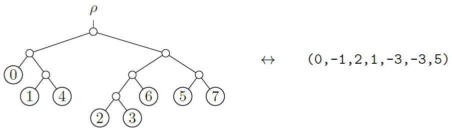
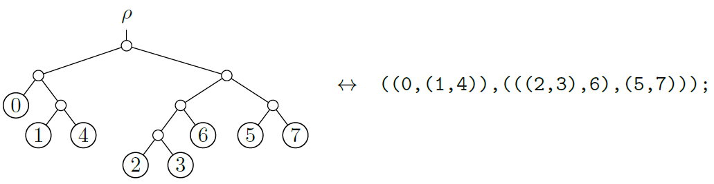

On a smooth algebraic curve, Weierstrass points are a finite collection of points that serve as useful "landmarks". When a curve is deformed, its Weierstrass points move continuously and sometimes collide. The "weight" of a Weierstrass point describes the amount of collision, coming from a generic deformation. These weights can be computed directly on an individual smooth algebraic curve, using algebraic data. The total number of Weierstrass points, when counting with weights, does not vary over curves of a fixed genus.
In the tropical setting, the definition of Weierstrass point carries over through the language of divisors and ranks. However, the algebraic formula for weights does not make sense tropically. Rather than having a finite number of Weierstrass points, the Weierstrass locus on a tropical curve may even contain all points on a closed interval. In this work, we define a weight for each connected component of the Weierstrass locus, using tropical data. We show the total weight summed over all components only depends on the genus of the underlying tropical curve. Furthermore, any "positive genus" subset of a tropical curve contains a Weierstrass point.
We prove a compatibility theorem between the tropical and algebraic weights of Weierstrass points, in which an extra factor appears. Our results recover numerous previous results in the literature on limit Weierstrass points on stable nodal curve.
In this paper, we introduce a new method for encoding a tree topology as a list of numbers that is simple and computationally efficient. It is motivated by the phylogenetic tree encoding proposed in Penn et al. [cite].
We emphasize that in this paper, we assume all trees are binary and rooted, unless specified otherwise. An example of our proposed tree encoding is shown in Figure~\ref{fig:tree-ola-ex}. The proposed encoding consists of an ordered list of integers.

The usual format for encoding a tree topology is in {\em Newick} format \cite[Chapter 35]{felsenstein-book}. This format uses parentheses and commas to indicate the tree structure, in addition to leaf labels. For example, in Figure~\ref{fig:tree-newick-ex} the same tree is shown with its Newick string.

One downside of Newick strings is that they are not unique. For example, the tree in Figure~\ref{fig:tree-newick-ex} is also specified by the Newick string \[\text{\tt ((((2,3),6),(5,7)),(0,(1,4)));}.\] Another downside is the presence of parentheses symbols, which encode non-trivial aspects of the tree structure, and cause the format to be ``non-uniform'' in information content.
In contrast, our proposed format for encoding a binary phylogenetic tree, the OLA encoding, consists of a list of integers. % like phylo2vec~\cite{penn-etal}. This allows for a simple and direct method for generating a uniformly random phylogenetic tree, on a fixed number of leaves. It also allows for efficient use in deep learning models for phylogenetic inference, and other phylogenetic problems~\cite{voznica2022deep}.\todo{elaborate} Other recent work in phylogenetics and deep learning: phyloformer \cite{nesterenko-boussau-jacob}.